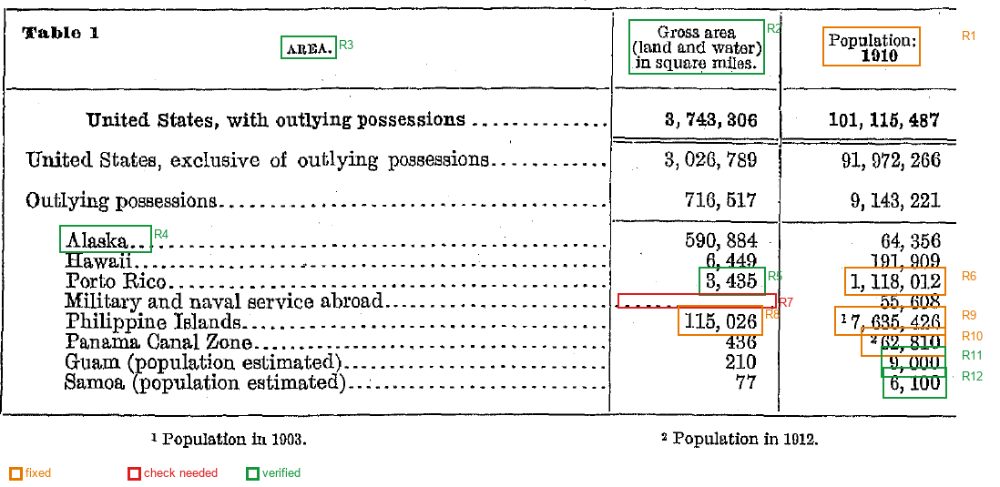

PaddleOCR en_PP-OCRv5_mobile_rec · 수정 5 · 확인 필요 1 · 원본 일치 6 · 칸에 마우스를 올리면 원시 OCR과 근거가 보입니다
수정확인 필요원본 일치(대조함)

| 구분 | Area | Gross area (land and water) in square miles | Population: 1910 |
|---|---|---|---|
| United States, with outlying possessions | 3,743,306 | 101,115,487 | |
| United States, exclusive of outlying possessions | 3,026,789 | 91,972,266 | |
| Outlying possessions | 716,517 | 9,143,221 | |
| Outlying possessions | AlaskaR4 | 590,884 | 64,356 |
| Outlying possessions | Hawaii | 6,449 | 191,909 |
| Outlying possessions | Porto Rico | 3,435R5 | 1,118,012R6 |
| Outlying possessions | Military and naval service abroad | R7 | 55,608 |
| Outlying possessions | Philippine Islands | 115,026R8 | ¹7,635,426R9 |
| Outlying possessions | Panama Canal Zone | 436 | ²62,810R10 |
| Outlying possessions | Guam (population estimated) | 210 | 9,000R11 |
| Outlying possessions | Samoa (population estimated) | 77 | 6,100R12 |
¹ Population in 1903.
² Population in 1912.
| 번호 | 위치 (행 / 열) | 원시 OCR | 결과 | 상태 | 근거 |
|---|---|---|---|---|---|
| R1 | (머리글) / Population: 1910 | Population: 19010 | Population: 1910 | 수정 | 열 제목 대조: 원본 두 줄 'Population:' / '1910'(굵은 글씨). 1910을 19010으로 읽음 |
| R2 | (머리글) / Gross area (land and water) in square miles | Gross area (land and water) in square miles. | Gross area (land and water) in square miles | 원본 일치 | 열 제목 대조: 원본 세 줄을 위에서 아래로 이어 한 열 이름으로 펼침 |
| R3 | (머리글) / Area | AREA. | Area | 원본 일치 | 행 이름 열의 제목. 원본 AREA. |
| R4 | Alaska / Area | Alaska.. | Alaska | 원본 일치 | 행 이름 대조: 끝의 점은 점선 리더라 지움. 원본 Alaska와 같음 |
| R5 | Porto Rico / Gross area (land and water) in square miles | 3, 435 | 3,435 | 원본 일치 | 원본 확대 시 첫 자리가 3인지 8인지 흐림. 속령 면적 합계 716,517이 3,435일 때만 맞아 3으로 확인 |
| R6 | Porto Rico / Population: 1910 | 1, 118, 01.2 | 1,118,012 | 수정 | 원본은 1, 118, 012. 끝자리 앞 점은 인쇄 얼룩. 속령 인구 합계와 일치 |
| R7 | Military and naval service abroad / Gross area (land and water) in square miles | (빈칸) | (빈칸) | 확인 필요 | 원본 칸에 숫자 없이 점선만 있음. 값이 0인지, 해당 없음인지 표에 설명이 없어 빈칸으로 둠 |
| R8 | Philippine Islands / Gross area (land and water) in square miles | 1.15, 026 | 115,026 | 수정 | 원본은 115, 026. 숫자 사이 점은 인쇄 얼룩. 속령 면적 합계 716,517과 일치 |
| R9 | Philippine Islands / Population: 1910 | 17, 635, 426 | 7,635,426 | 수정 | 원본은 위첨자 각주 ¹ + 7, 635, 426. 각주 1(Population in 1903)이 숫자 앞에 붙어 읽힘. 속령 인구 합계 9,143,221과 일치 |
| R10 | Panama Canal Zone / Population: 1910 | 262, 810 | 62,810 | 수정 | 원본은 위첨자 각주 ² + 62, 810. 각주 2(Population in 1912)가 숫자 앞에 붙어 읽힘. 속령 인구 합계와 일치 |
| R11 | Guam (population estimated) / Population: 1910 | 9,000 | 9,000 | 원본 일치 | OCR 신뢰도 0.855로 낮아 확대 대조. 원본 9, 000과 같음. 행 이름대로 추정치 |
| R12 | Samoa (population estimated) / Population: 1910 | 6, 100 | 6,100 | 원본 일치 | OCR 신뢰도 0.908로 낮아 확대 대조. 원본 6, 100과 같음. 행 이름대로 추정치 |
| 검산 | 열 | 원본 합계 | 원시 OCR 합 | 검토 후 합 |
|---|---|---|---|---|
| 속령 합계 | Gross area (land and water) in square miles | 716,517 | 716,517 ✅ | 716,517 ✅ |
| 속령 합계 | Population: 1910 | 9,143,221 | 19,343,221 ❌ | 9,143,221 ✅ |
| 미국 전체 합계 | Gross area (land and water) in square miles | 3,743,306 | 3,743,306 ✅ | 3,743,306 ✅ |
| 미국 전체 합계 | Population: 1910 | 101,115,487 | 101,115,487 ✅ | 101,115,487 ✅ |